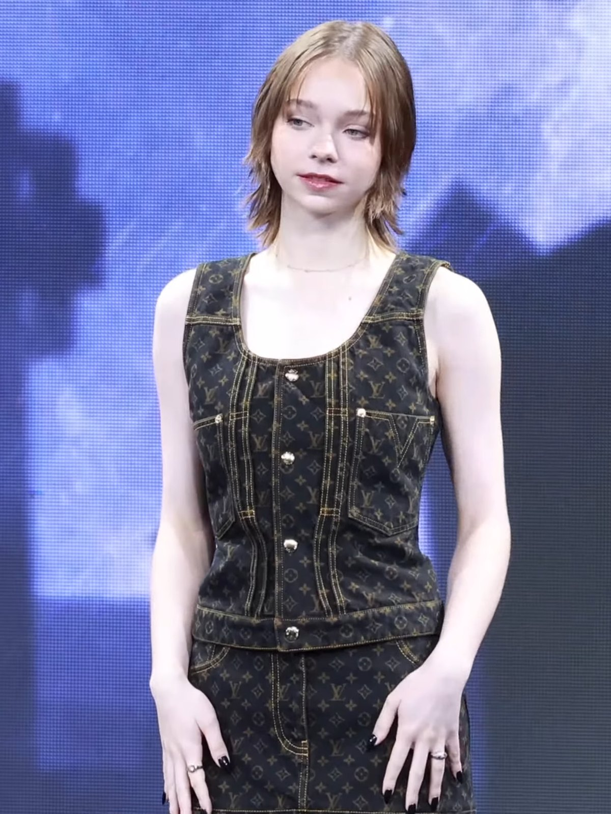
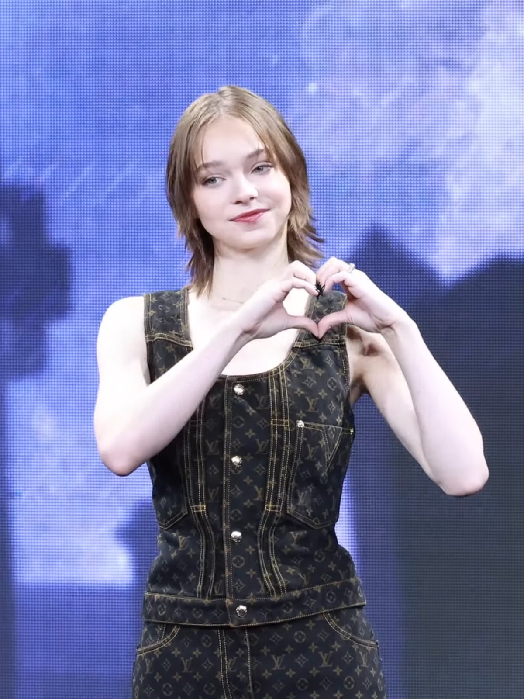
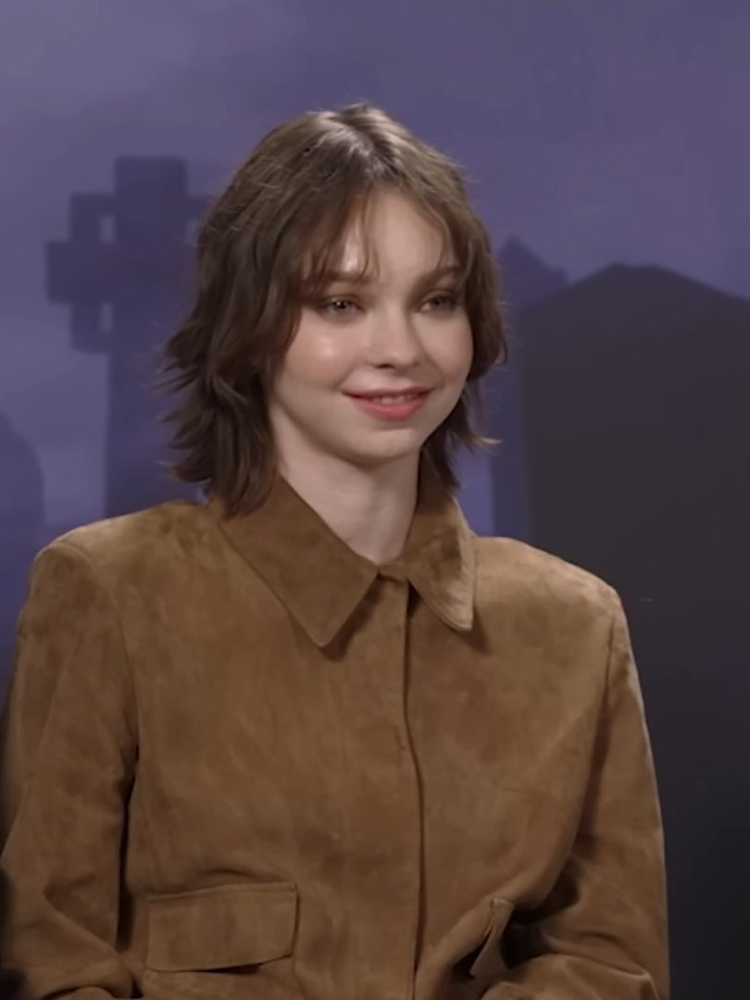

01
Enid Sinclair
Die farbenfroheste Werwölfin von Nevermore Academy. Emmas Verkörperung machte Enid zum Fan-Liebling — bekannt für Regenbogen-Manikürts, gute Laune und die tiefste Freundschaft mit Wednesday Addams.
American Actress · geb. 2. April 2002
Von Orlando nach Nevermore — eine Schauspielerin zwischen Werwölfin, Detektivin und Fantasy-Nerd.
Portrait lesen ↓Emma Elizabeth Myers, geboren am 2. April 2002 in Orlando, Florida, ist eine amerikanische Schauspielerin. Sie begann ihre Karriere als Kinderdarstellerin 2010 in The Glades.
Der internationale Durchbruch gelang ihr 2022 mit der Rolle der Enid Sinclair in Tim Burtons Netflix-Serie Wednesday — einer farbenfrohen, warmherzigen Werwölfin, die sofort zum Publikumsliebling wurde. Interessantes Detail: Ursprünglich sprach Emma für die Titelrolle Wednesday Addams vor, bevor sie als deren beste Freundin besetzt wurde.
2024 übernahm sie die Hauptrolle der Pip Fitz-Amobi in A Good Girl's Guide to Murder (BBC/Netflix) — und musste dafür einen makellosen britischen Akzent lernen. 2025 spielte sie Natalie in A Minecraft Movie und wurde dafür mit einem Nickelodeon Kids' Choice Award ausgezeichnet.
2026 nahm Forbes sie in die 30 Under 30-Liste auf. Sie gilt als eine der prägenden jungen Darstellerinnen ihrer Generation — mit einem seltenen Mix aus Stärke, Verletzlichkeit und emotionaler Intelligenz.
Am 2. April in Orlando, Florida. Voller Name: Emma Elizabeth Myers.
Debüt als Kinderdarstellerin in der TV-Serie The Glades.
Das Mädchen in dem Bus. Ihr letzter Auftritt für ganze 10 Jahre.
Erste größere Filmrolle in der Lifetime-Produktion.
Zwar nur eine Nebenrolle aber die wahre Beauty.
Spielt als Beebee Jordan in dieser romanze Film rund um Weihnachten.
Durchbruch als Enid Sinclair in Tim Burtons Netflix-Serie — über 250 Mio. Streams in den ersten Wochen.
Netflix-Weihnachtsfilm an der Seite von Jennifer Garner und Ed Helms.
Hauptrolle als Pip Fitz-Amobi — mit britischem Akzent.
A Minecraft Movie wird Kassenhit — Emma gewinnt einen Kids' Choice Award.
Die Fortsetzung als Pippa, die nun ein Wettrennen um die Zeit besiegen muss.
Aufnahme in die Klasse 2026 — als eine der einflussreichsten jungen Stimmen Hollywoods.
Tochter von Red - Vogelhafter Teenager
Das epische Finale der AGGTM-Reihe. Drama ist vorprogrammiert.
Die farbenfroheste Werwölfin von Nevermore Academy. Emmas Verkörperung machte Enid zum Fan-Liebling — bekannt für Regenbogen-Manikürts, gute Laune und die tiefste Freundschaft mit Wednesday Addams.
Eine Teenagerin, die einen alten Mordfall in ihrem Heimatort aufrollt. Für die Rolle lernte Emma einen makellosen britischen Akzent — von Kritikern und britischem Publikum gefeiert.
Die große Schwester im Live-Action-Abenteuer nach dem meistverkauften Videospiel aller Zeiten. Der Film brachte ihr den Nickelodeon Kids' Choice Award ein.
Emma besitzt zwei Katzen — obwohl sie allergisch gegen sie ist. Ihre flauschigen Begleiter heißen Gorby und Agamemnon. Sie hat in Interviews gesagt, sie liebe Katzen mehr, als sie ihre Allergie hasse.
Bekennende Video-Game-Nerdin. Zwei ihrer Traumrollen: Max Caulfield aus Life Is Strange und eine Figur aus The Last of Us. Zudem spielt sie auch gerne The Sims 4 und Minecraft.
Selbsterklärte Hardcore-Fanatikerin von Star Wars und Der Herr der Ringe. Fantasy sei ihr absolutes Lieblingsgenre — „das, womit ich aufgewachsen bin".
Großer Fan der südkoreanischen Boyband SEVENTEEN. Musik läuft ständig im Hintergrund, wenn sie sich auf Drehs vorbereitet. Jack Black betitelte ihre Musik als sehr abwechslungsreich und schön.
Für A Good Girl's Guide to Murder übernahm sie einen britischen Akzent so überzeugend, dass viele Zuschauer:innen sie zunächst für eine Britin hielten.
Beschreibt sich selbst als ruhig und leicht introvertiert. Bevorzugt einen Abend zu Hause mit Buch, Katze und Videospiel gegenüber jeder Party.
Sprach ursprünglich für die Titelrolle Wednesday Addams vor — wurde dann als deren Gegenpol Enid Sinclair besetzt. Eine der glücklichsten Fehlbesetzungen des Streaming-Zeitalters.
Kompakte 5 Fuß 3 Zoll — häufig eines der kleineren Cast-Mitglieder, dafür mit umso größerer Bühnenpräsenz.
107 Fragen. 107 Antworten. Emma Myers in ihren eigenen Worten.
Erinnerst du dich an dein allererstes Vorsprechen?
„Ja, merkwürdigerweise habe ich ein sehr gutes Gedächtnis. Ich war in Florida und habe für eine Pampers-Windelbox vorgesprochen. Ich glaube, ich war etwa drei Jahre alt."
— Emma Myers
Kannst du ein Skript lesen, es zweimal durchgehen und es dann behalten?
„Ich glaube nicht, dass es fotografisch ist, aber ich habe schon als Baby bei Memory-Spielen meine Mutter geschlagen. Ich schaue mir meine Zeilen nie vor dem Tag des Drehs an, sondern erst in der Probe, und nach 15 Minuten kann ich sie."
— Emma Myers
Wo bist du aufgewachsen?
„Ich bin in Orlando, Florida, aufgewachsen, etwa 10 bis 15 Minuten von Disney entfernt."
— Emma Myers
Erzähl mir vom Homeschooling.
„Meine Mutter hat uns unterrichtet, bis wir etwa 12 waren. Danach lehrte uns der Lehrplan, wie wir uns selbst unterrichten können. Ich war im Grunde mein eigener Tutor. Ich war nie auf einer regulären Schule."
— Emma Myers
Hast du dadurch Freunde außerhalb der Familie gefunden?
„Ja, ich war in einem Tanzteam, seit ich vier war, und habe Freunde durch die Schauspielerei und das Theater gefunden. Es gab auch Homeschool-Events in der Gegend."
— Emma Myers
War die Unterhaltungsbranche schon immer dein Ding?
„Immer. Ich habe nie wirklich eine Karriere in Erwägung gezogen, die nicht mit Unterhaltung zu tun hatte. Ich liebe es einfach, aufzutreten."
— Emma Myers
Hattest du jemals das Gefühl, Schulveranstaltungen wie den Abschlussball zu verpassen?
„Nein, unsere Homeschool-Gruppe hat englische Country-Line-Dances veranstaltet, was viel Spaß gemacht hat. Ein Abschlussball war nie wirklich meine Umgebung, da ich sehr introvertiert aufgewachsen bin."
— Emma Myers
Warum war dein Freundeskreis 'die Seltsamen'?
„Wir waren einfach die Außenseiter. Andere Leute hielten uns für seltsam, weil wir exzentrisch waren und andere Interessen hatten, aber ich finde es okay, solange man niemandem schadet."
— Emma Myers
Welche Art von Mobbing hast du erlebt und wie bist du damit umgegangen?
„Es war dieses typische Mobbing unter Teenager-Mädchen in einem Tanzteam – Leute waren unecht freundlich oder haben einen zu Dingen eingeladen, nur um sich über einen lustig zu machen. Ich hege heute keinen Groll mehr, aber es war hart."
— Emma Myers
Was ist es an Fantasy, das dich so fasziniert?
„Ich liebe den Eskapismus. Als Kind habe ich mit meinen Schwestern immer so getan, als wären wir in Star Wars oder Mittelerde. Ich finde Trost in großen, epischen Universen."
— Emma Myers
Kannst du Elbisch sprechen?
„Ich nicht, aber mein Onkel kann es fließend. Er hat einen ganzen Kurs dazu belegt. Ich würde es gerne lernen."
— Emma Myers
Wann hast du dich wirklich der Religion zugewandt?
„Ich bin christlich aufgewachsen, aber die organisierte Religion hat mich als Teenager eher abgeschreckt. Mit 21, als ich eine sehr schwere Zeit mit Depressionen und Schlaflosigkeit hatte, fing ich an, eine direkte Beziehung zu Gott aufzubauen, statt nur Teil einer Kirche zu sein."
— Emma Myers
Hast du Panikattacken und soziale Ängste erlebt?
„Ja, so viele Male. Es ist sehr lähmend. Ich habe vor kurzem mit einer Therapie begonnen, was mir sehr geholfen hat. Es gab Zeiten, in denen ich nicht wusste, wie lange ich es noch aushalte."
— Emma Myers
Was hast du durch die Therapie über dich gelernt?
„Ich habe herausgefunden, dass ich ADHS habe, was mir geholfen hat, viele Dinge über mich zu verstehen."
— Emma Myers
Wie war es, als sich dein Leben durch 'Wednesday' über Nacht veränderte?
„Es war lächerlich. Ich ging mit 9.000 Followern ins Bett und hatte drei Tage später 5 Millionen. Am Anfang war es wie eine Sucht, die Reaktionen online zu lesen, aber es war auch sehr schädlich."
— Emma Myers
Was sagen die Leute im Internet über dich?
„Fast alles, was man im Internet über mich hört, ist wahrscheinlich nicht wahr. Es werden Gerüchte über meine Familie verbreitet, zum Beispiel, dass meine Schwester sich von uns entfremdet hätte, dabei ist sie nur an der Law School in einem anderen Bundesstaat."
— Emma Myers
Wie stehst du zum 'Shipping' von dir und Jenna Ortega?
„Charaktere zu 'shippen' ist okay und macht Spaß, aber echte Menschen zu 'shippen' ist gefährlich. Es macht einen unruhig und führt dazu, dass Fans andere Leute in unserem Leben belästigen."
— Emma Myers
Was ist es für ein Gefühl, an einem Set wie 'Wednesday' zu arbeiten?
„Jeder ist unglaublich. Die Erwachsenen im Cast sind so cool. Steve Buscemi dabei zu haben, war ein Wahnsinn. Der Cast ist für mich wie eine Familie geworden."
— Emma Myers
Wie geheimnisvoll musst du bei der neuen Staffel sein?
„Sehr geheimnisvoll. Ich kann absolut nichts verraten, sonst werde ich gefeuert."
— Emma Myers
Glaubst du, es gibt ein Leben nach dem Tod?
„Ja, ich glaube an ein Leben nach dem Tod und dass eine Beziehung zu Gott das ist, was zählt."
— Emma Myers
Stimmt es, dass du als Kind viel gelogen hast?
„Ja, ich war eine pathologische Lügnerin. Ich habe über alles gelogen, auch wenn es keinen Grund gab. Jetzt versuche ich, übermäßig ehrlich zu sein."
— Emma Myers
Würdest du gerne eines Tages einen Oscar gewinnen?
„Das ist auf jeden Fall ein Ziel."
— Emma Myers
Wie war die Arbeit mit Jack Black und Jason Momoa in Minecraft?
„Es war ein Kindheitstraum. Jack Black ist hinter den Kulissen genau wie auf der Leinwand. Er hat mir sogar ein Bild von uns beiden beim Wandern in Neuseeland geschenkt."
— Emma Myers
Kannst du 'A Good Girl's Guide to Murder' erklären?
„Es basiert auf den Büchern von Holly Jackson. Es geht um ein Mädchen namens Pip, das ein bereits gelöstes Verbrechen in ihrer Stadt neu untersucht, weil sie glaubt, dass der wahre Mörder noch frei ist."
— Emma Myers
Was ist dein 'Guilty Pleasure'?
„Dunkle Schokolade, am liebsten 90-prozentige."
— Emma Myers
Was wäre deine Henkersmahlzeit?
„Ein riesiger Stapel amerikanischer Pancakes mit Schokostückchen, Sahne und Ahornsirup."
— Emma Myers
Wenn du ohne Erklärung verhaftet würdest, was würden deine Freunde und Familie vermuten, was du getan hättest?
„Ich hätte wahrscheinlich jemanden geschlagen, vielleicht wegen eines Streits im Straßenverkehr oder um einen Parkplatz."
— Emma Myers
Hast du dich jemals wirklich auf der Straße gestritten?
„Ich fahre weg, bevor es zu ernst wird."
— Emma Myers
Wann hast du mit der Schauspielerei angefangen und wie hat dich die Phase der Ablehnung beeinflusst?
„Ich fing jung mit Theater und Werbespots in Orlando an. Mit 12 machte ich eine Pause, weil ich nicht mehr konnte, und kehrte mit 16 in Atlanta zurück, weil es meine Leidenschaft blieb."
— Emma Myers
Wie war der Vorsprechprozess für 'Wednesday'?
„Es war ein viermonatiger Prozess. Ich dachte nach dem Chemie-Lesen mit Jenna, ich hätte es vermasselt, weil ich eine ihrer Zeilen unterbrochen habe."
— Emma Myers
Wusstest du, dass du für Enid vorsprechen wolltest, oder hat dein Team das vorgeschlagen?
„Ich habe zuerst für Wednesday vorgesprochen, aber das lief nicht gut. Dann schickten sie mir die Rollenbeschreibung für Enid, was sich viel besser anfühlte."
— Emma Myers
Hast du dir dein Vorsprechen jemals wieder angesehen?
„Oh Gott, nein. Das ist mir zu peinlich."
— Emma Myers
Glaubst du, dass du und Enid eher ähnlich oder verschieden seid?
„Wir sind ziemlich verschieden. Ich bin eher introvertiert, trage nicht viele Farben und sie kann besser kommunizieren."
— Emma Myers
War der Auftritt bei Fallon deine erste Talkshow?
„Ja, das erste Mal."
— Emma Myers
Warst du sehr nervös?
„So nervös, ich habe gezittert. Ich hatte Angst, in meinen Absätzen auf der Bühne zu stolpern."
— Emma Myers
Wusstest du während der Dreharbeiten, wie groß die Serie werden würde?
„Ich dachte, sie würde erfolgreich sein, weil Tim Burton involviert ist, aber ich hatte keine Ahnung, dass sie Rekorde brechen würde."
— Emma Myers
Was war die größte Umstellung angesichts des neuen Ruhms?
„Es war anfangs schwer und überwältigend. Ich musste Grenzen setzen, wie DMs einschränken und Benachrichtigungen ausschalten."
— Emma Myers
Gibt es außer Social Media noch andere Grenzen, die du gesetzt hast?
„Ich habe meine Schwestern gebeten, nicht mehr auf Twitter nach meinem Namen zu suchen oder mir Dinge zu schicken, weil es zu viel wird."
— Emma Myers
Hat dir jemand Tipps gegeben, wie du deinen Selbstwert priorisierst?
„Meine Mutter ist eine große Hilfe; sie erinnert mich daran, warum ich das tue und dass ich nicht auf andere hören soll."
— Emma Myers
Hast du in der Schule Erfahrungen mit Mobbing gemacht?
„Ja, während vier Jahren im kompetitiven Tanzsport. Es war nicht schön und brachte mich dazu, den Sport zu hassen."
— Emma Myers
Welcher Film- oder Songtitel beschreibt am besten deine psychische Gesundheit heute?
„'How to Disappear Completely' von Radiohead."
— Emma Myers
Wie offen bist du gegenüber Menschen in deinem Leben, wenn es dir schlecht geht?
„Ziemlich offen, da ich ein gutes Vorbild für meine drei Schwestern sein möchte."
— Emma Myers
War der Umzug weg von Florida eine aktive Entscheidung von dir?
„Nein, der Job meines Vaters wurde verlegt, also zog die ganze Familie mit."
— Emma Myers
Was ist dein Lieblingsteil deiner Morgen- oder Abendroutine?
„Ich mag es zu lesen, während ich Instrumentalmusik oder Videospiel-Soundtracks höre."
— Emma Myers
Bist du ein Gamer?
„Ja, ich bin mit Nintendo aufgewachsen (Zelda, Ace Attorney) und habe meine Switch dabei."
— Emma Myers
Wie hat deine Karriere dein Wohlbefinden beeinflusst?
„Es war verrückt, aber bisher komme ich gut damit klar."
— Emma Myers
Was ist die am meisten missverstandene Sache an dir?
„Dass ich wie Enid sei. In Wirklichkeit bin ich sehr laid-back und introvertiert."
— Emma Myers
Was ist der beste Rat, den du je erhalten hast?
„Dass man nach einem Vorsprechen seine Seiten wegwirft und nie wieder daran denkt."
— Emma Myers
Was bedeutet Wellness für dich?
„In Einklang mit allem zu sein, eine gute Routine zu haben und sich so gesund wie möglich zu halten."
— Emma Myers
Wie ist deine Beziehung zu Social Media?
„Ich denke, es kann das Wohlbefinden beeinflussen, deshalb habe ich mir selbst Zeitlimits und Einschränkungen gesetzt."
— Emma Myers
Was ist deine liebste Form der Selbstfürsorge?
„Ein gutes Bad mit einer Kerze, einem Buch und einer Badebombe."
— Emma Myers
Wer hatte den positivsten Einfluss auf deine psychische Gesundheit?
„Meine Familie."
— Emma Myers
Wenn du zu einem Moment in deinem Leben zurückkehren könntest, welcher wäre das?
„Ich würde zurückgehen, als ich 14 war, und mir sagen, dass ich mit dem Tanzen aufhören soll und dass alles gut wird."
— Emma Myers
Hast du eine Traumrolle oder einen Co-Star?
„Ein 'Wednesday'-'Twilight'-Spin-off wäre toll, oder ein Projekt von Neil Gaiman."
— Emma Myers
Stimmt es, dass sie ein leidenschaftlicher Fan von Star Wars und Herr der Ringe ist?
„Richtig. Sie hat auch die Tongariro-Durchquerung gemacht und Hobbiton besucht."
— Emma Myers
Stimmt es, dass Herr der Ringe der Grund war, warum sie mit der Schauspielerei anfing?
„Wahr."
— Emma Myers
Gab es eine bestimmte Szene, die sie dazu inspiriert hat?
„Nicht direkt eine Szene, sondern die dreistündigen Behind-the-Scenes-Videos von Peter Jackson. Besonders eine Einstellung von Elijah Wood als Frodo, wie er sich hinter einem Baum vor Orks versteckt."
— Emma Myers
Stimmt es, dass sie ursprünglich für die Rolle der Wednesday vorgesprochen hat, bevor sie als ihre beste Freundin besetzt wurde?
„Wahr."
— Emma Myers
Stimmt es, dass sie zwei Katzen besitzt, obwohl sie allergisch gegen sie ist?
„Wahr."
— Emma Myers
Wer hat sich den Namen 'Omnom' für die Katze ausgedacht?
„Emma selbst. Der Name entwickelte sich von Agamemnon zu Aggie, dann zu Nom Nom und schließlich zu Om Nom (oder manchmal Namathan)."
— Emma Myers
Stimmt es, dass sie ein großer Videospiel-Fan ist und Max Caulfield oder Edith Finch spielen möchte?
„Halb wahr. Sie wurde gefragt, welche Adaptionen cool wären, aber sie liebt die Spiele so sehr, dass sie sie vielleicht lieber nur als Fan genießen möchte, anstatt sie zu verändern (ähnlich wie beim Zelda-Film)."
— Emma Myers
Gehört sie zu den Menschen, die ihre eigene Arbeit nicht gerne sehen?
„Ja, es bringt sie zum Schaudern. Bei der Vorführung der zweiten Staffel von 'A Good Girls Guide to Murder' dachte sie nur: 'Holt sie vom Bildschirm'."
— Emma Myers
Stimmt es, dass sie ein großer K-Pop-Fan ist, speziell von der Gruppe Seventeen?
„Wahr."
— Emma Myers
Wer ist ihr 'Bias' (Lieblingsmitglied) bei Seventeen?
„Sie hat keinen speziellen Bias; sie mag alle, da sie alle sehr freundlich zu ihr waren, als sie sie mehrmals getroffen hat."
— Emma Myers
Was ist ihr Lieblingskonzept von Seventeen?
„Sie ist ein Fan der älteren Sachen, daher nennt sie 'Oh My' oder 'Going 17' als ihre Lieblingsära."
— Emma Myers
Was hält sie von deren 'Tiny Desk'-Konzert?
„Sie wusste nichts davon, da sie seit etwa fünf Jahren kaum etwas im Internet verfolgt hat, will es sich aber ansehen."
— Emma Myers
Wie reagiert sie auf den Kommentar, dass Pip in Staffel 2 noch mehr traumatisiert wird?
„Sie bestätigt das und vergleicht es mit dem Euphoria-Meme, in dem glückliche Momente nur 5 Sekunden dauern."
— Emma Myers
Wie war es für sie, zum ersten Mal ein Auto (einen alten Volvo) am Set zu fahren?
„Es war furchterregend, besonders weil es auf der anderen Straßenseite war. Sie war extrem ängstlich dabei."
— Emma Myers
Hat ihr englischer Akzent ihre anderen Rollen beeinflusst?
„Ja, sie glaubt, dass sie die Rolle in 'Minecraft' bekam, weil ein Produzent ihren Akzent nach vier Monaten Dreharbeiten in England seltsam und lustig fand."
— Emma Myers
Was ist ihre liebste britische Redewendung?
„Sie mag 'good shout' und benutzt in letzter Zeit ständig das Wort 'lush'."
— Emma Myers
Was wollen Fans von 'A Good Girls Guide to Murder' meistens von ihr wissen?
„Die Fans sind oft einen Schritt voraus und kennen das Buch in- und auswendig, sodass sie Emma an Details erinnern müssen, die sie vergessen hat."
— Emma Myers
Wird sie auf der Straße eher als Pip oder als Wednesday erkannt?
„Seit dem Erscheinen der ersten Staffel von 'Good Girls' wird sie öfter als Pip identifiziert, da die blonden Haare der Figur den Leuten eher auffallen."
— Emma Myers
Welche Filme empfiehlt sie anderen Menschen am häufigsten?
„Immer 'Herr der Ringe' und 'Star Wars'. Außerdem empfiehlt sie oft den Bollywood-Film '3 Idiots'."
— Emma Myers
Was hat sie von ihren Sets als Andenken mit nach Hause genommen?
„Von 'Minecraft' ihr Schwert und ein Bild aus dem Herrenhaus. Von 'Wednesday' ein Stofftier (das Jenna Ortega für sie gestohlen hat). Von 'Good Girls' ein Hemd und Podcast-Sticker."
— Emma Myers
Wie heißt das Pferd von Gandalf?
„Schattenfell (Shadowfax)."
— Emma Myers
Gibt es einen Textsatz aus ihrer Karriere, den sie nie vergessen wird?
„In 'Wednesday' liebt sie die Zeilen 'It's a snood, silly' und 'Not all of us have chauffeurs'. An Expositionstexte aus 'Good Girls' erinnert sie sich ungern, weil sie so lang waren."
— Emma Myers
Welche Filmzitate verwendet sie selbst am häufigsten?
„Ein langes Zitat aus 'Große Haie – Kleine Fische' (Shark Tale) über einen Garnelen-Charakter, insbesondere den Teil: 'It's fairly happy' (Es ist ziemlich glücklich)."
— Emma Myers
Hattest du schon einmal die Gelegenheit, mit Welpen für ein Interview zu spielen?
„Nein, ich habe das noch nicht mit Welpen gemacht. Ich freue mich auf die Kätzchen, weil ich Katzen liebe."
— Emma Myers
Haben Sie schon einmal mit Kätzchen zusammengearbeitet?
„Emma Myers reagiert mit Entzücken auf die Kätzchen und versucht, sie anzulocken ("Können sie nicht spüren, dass ich eine Katzenmutter bin?")."
— Emma Myers
Glaubst du, sie mögen das? (Bezogen auf ein Spielzeug/Milch)
„Emma Myers beobachtet die Kätzchen und kommentiert ihr Verhalten."
— Emma Myers
Sollten wir ein Spielzeug holen?
„Emma Myers möchte ihr Lieblingsspielzeug, hat aber Angst, die Kätzchen zu erschrecken."
— Emma Myers
Willst du Milch?
„Emma Meyers interagiert mit den Kätzchen, während sie über die Dreharbeiten spricht."
— Emma Myers
Was sind deine Gedanken und Gefühle zu Steve Buscemi?
„Er war super, super lustig. Er hat sich vorgestellt und passte sofort rein. Steve ist eine Legende."
— Emma Myers
Was ist dein unhinged, dunkler Gedanke?
„Ich habe das Gefühl, dass ich meinen unhinged, dunkelsten Gedanken nicht preisgeben möchte. Aber manchmal, wenn man hinter dem Steuer sitzt..."
— Emma Myers
Welche Superkraft hättest du gerne?
„Vielleicht Gestaltwandeln oder Telekinese. Teleportation ist auch gut. Ich möchte einfach weggehen können."
— Emma Myers
Hast du ein besonderes Talent oder eine Angewohnheit?
„Ich war besessen von Geparden. Ich bin auf allen Vieren herumgelaufen und kann das bis heute sehr schnell tun."
— Emma Myers
Was hast du in Irland gemacht?
„Ich war viel wandern. Ich habe viele Roadtrips gemacht, um die Landschaft zu sehen. Es gab viele Pubs und ich war in Parks und auf Bauernmärkten."
— Emma Myers
Hast du jemals bei Criminal Minds mitgespielt?
„Nein, aber das war meine Lieblingsserie als ich aufwuchs. Ich habe nie ein Vorsprechen bekommen. Meine Mutter und ich fragten uns immer, wann ich für Criminal Minds vorsprechen würde."
— Emma Myers
Wirst du oft mit anderen Leuten verwechselt?
„Ich werde mit so vielen Leuten verwechselt. Jemand sagt: "Oh, du warst toll in Bones and All" und meint Taylor Russell. Oder vielleicht meine Freundin Isabella."
— Emma Myers
Wie reagierst du, wenn Leute dich auf der Straße anschreien?
„Wenn Leute mich von hinten anschreien, ignoriere ich das einfach. Ich rede nicht mit ihnen, wenn sie schreien. Man sollte höflich herkommen, dann mache ich gerne ein Foto."
— Emma Myers
Hast du schon einmal für Wednesday vorgesprochen?
„Ich hatte schon früher in meinem Leben für Wednesday vorgesprochen, als ich 12 oder 13 war, für die Animationsfilme."
— Emma Myers
Wer wäre dein Traumbesetzungspartner?
„Wir sagten, Danny DeVito wäre großartig. Ich fände es toll, wenn er eine B-Storyline hätte, zum Beispiel als Hausmeister, der heimlich die Hauptperson ist."
— Emma Myers
Wie sollte die Zusammenarbeit zwischen euren Charakteren aussehen?
„Ich würde gerne meine Werwolfkräfte einsetzen, um dir bei etwas zu helfen."
— Emma Myers
Ist das dein Debüt in einer Talkshow?
„Ja, das ist korrekt."
— Emma Myers
Filmst du gerade einen Film mit Jennifer Garner?
„Ja, sie spielt darin meine Mutter. Sie ist unglaublich süß und erinnert mich an meine eigene Mutter."
— Emma Myers
Ist deine echte Mutter hier?
„Ja, meine echte Mutter ist hier."
— Emma Myers
War deine Mutter aufgeregt, dass Jennifer Garner sie spielt?
„Ich glaube, mein Vater war sogar noch aufgeregter."
— Emma Myers
Stimmt es, dass du ein großer Fan einer Band bist und sie gerne Leuten vorstellst?
„Ich stelle sie vor, wenn Leute mich danach fragen. Die Band heißt SEVENTEEN."
— Emma Myers
Wie lange bist du schon Fan von SEVENTEEN?
„Seit ich 15 war, also seit etwa fünf Jahren."
— Emma Myers
Es sind 13 Leute in der Band SEVENTEEN?
„Ja, es sind 13 Mitglieder. Die Rechnung ist 13 Mitglieder + 3 Untergruppen (Hip-Hop, Performance, Vocal) + 1 Team = 17."
— Emma Myers
Hast du eine Song-Empfehlung für meine Playlist?
„Mein Lieblingssong ist 'To You'. Er ist fröhlich, macht Spaß und hat eine tolle Geschichte."
— Emma Myers
Wusstest du vor der Serie Wednesday bereits etwas über die Addams Family?
„Ich hatte die Filme aus den 90ern als Kind gesehen, aber ich wusste nicht, dass es auch eine TV-Serie und Comics gibt. Als ich die Rolle bekam, habe ich mich intensiv damit befasst."
— Emma Myers
Wolltest du die Rolle der Mitbewohnerin oder wolltest du Wednesday spielen?
„Ich wäre keine gute Wednesday."
— Emma Myers
Könntest du Wednesday überhaupt spielen oder hast du etwas von ihr in dir?
„Wednesday liegt mir nicht natürlich, Enid hingegen schon. Jenna Ortega hat das so makellos gemacht, dass es eine Schande wäre, wenn ich es auch nur versuchen würde."
— Emma Myers
Bist du ein Optimist?
„Ja, ich bin ein Optimist. Das ist eine der wenigen Gemeinsamkeiten, die ich mit Enid habe. Ansonsten trage ich nicht gerne bunte Kleidung und bin eher introvertiert."
— Emma Myers
Gab es ein Werwolf-Training?
„Ja, wir hatten ein Werwolf-Bootcamp. Für die sechste Episode mussten meine Serien-Brüder in Werwolf-Stimmung kommen, und ich sollte auch mitmachen."
— Emma Myers
Was passiert in einem Werwolf-Bootcamp?
„Ich habe noch nie so viel Parkour gemacht. Ich musste auf allen Vieren über den Boden rennen und über Dinge springen. Es gab Stuntleute, die Schafe spielten, und wir mussten im Kreis um sie herumschleichen."
— Emma Myers
15 Fragen, 3 erlaubte Pässe. Emma Myers spielt das riskanteste Interview-Format der Gen-Z-Popkultur — zwischen entwaffnender Ehrlichkeit und professioneller Diskretion.
Schauspiel-Notizen für Jenna Ortega?
„Ich glaube nicht, dass ich das tun würde. Sie kann generell einfach alles."
— Emma Myers
Jüngste Interaktion mit Jacksepticeye?
„Er hat mir neulich eine DM geschickt. Er hat endlich ‚Minecraft' gesehen … ich bin ein Fan von ihm, seit ich elf war. Er schrieb: ‚Oh mein Gott, ich habe gerade den Film gesehen, er war großartig. Du warst lustig.'"
— Emma Myers
Deine Strategie für Direktnachrichten (DMs)?
„Ich schreibe jemandem eine DM, wenn wir uns beide gegenseitig folgen. Das ist für mich das gegenseitige Okay, dass wir chatten können."
— Emma Myers
Einschüchterndster Co-Star?
„Ich hatte große Angst, Jack Black zu treffen, weil er so eine Legende ist … aber er ist eigentlich gar nicht so. Er ist ein sehr liebenswürdiger Kerl. Gwendoline Christie war ebenfalls einschüchternd — sie ist die liebenswürdigste Frau, aber sie hat so eine Präsenz. Ich war einfach von ihrer Schönheit eingeschüchtert."
— Emma Myers
Ein letztes Geständnis, für das du nicht verurteilt werden möchtest? Pass #1
„Vielleicht tue ich einfach nichts, für das ich nicht verurteilt werden möchte. Oder vielleicht möchte ich ernsthaft bleiben."
— Emma Myers
Bevorzugtes Mystery-/YA-Fandom?
„Ehrlich gesagt liebe ich die ‚Good Girls'-Fans von A Good Girl's Guide to Murder. Sie sind immer so süß. Sie sind wirklich klug, weil sie die Bücher gelesen haben. Sie haben die Besetzung Monate vor der Ankündigung entziffert."
— Emma Myers
Kampf-Prognose: Jack Black vs. Jason Momoa?
„Ich setze auf Jack. Jack hat etwas mehr Erfahrung. Außerdem glaube ich, dass er seinen Humor und Witz einsetzen würde, um Jason zu schlagen."
— Emma Myers
Wer soll mit auf eine einsame Insel — und wer auf keinen Fall? ½ Pass #2
„Jason Momoa wäre die offensichtliche Wahl zum Überleben. Aber vielleicht nehme ich eher jemanden Lustigen mit, wie Asha Banks oder Danielle Brooks." (Zur Person, die sie nicht dabei haben möchte, nutzt sie einen halben Pass.)
— Emma Myers
Wahrheitsgehalt im Interview?
„Ich war früher, mit etwa zwölf Jahren, eine pathologische Lügnerin. Heute lüge ich nicht mehr wirklich, weil ich eine 180-Grad-Wende gemacht habe und jetzt zum ‚Oversharing' neige."
— Emma Myers
Eine Rolle, die du nicht erneut spielen würdest?
„Wahrscheinlich jede meiner Rollen, die gestorben ist. Wenn ein Charakter stirbt und zurückgebracht wird, macht das den Tod billig. Zum Beispiel Angie in ‚Southern Gospel' — sie muss tot bleiben, damit die Geschichte funktioniert."
— Emma Myers
Jemals in einen Co-Star verliebt gewesen? ½ Pass #2
„Ich antworte zur Hälfte. Es wäre seltsam, wenn man es nie wäre … Schauspieler sind attraktive Menschen. Aber ich werde nicht sagen, wer."
— Emma Myers
Schlechtester On-Screen-Kuss?
„Mit meinem besten Freund Georgie Farmer in ‚Wednesday'. Es war eiskalt in Rumänien und unsere Nasen liefen. Als wir uns küssten, tropfte unser beider Schleim in den Mund des anderen. Das war keine schöne Erfahrung."
— Emma Myers
Enttäuschendste Celebrity-Begegnung? Pass #3
„Ich habe eine Person im Kopf, aber ich werde es nicht sagen, weil ich sonst in Schwierigkeiten geraten würde."
— Emma Myers
Bewertung deiner eigenen Premieren-Looks?
„Ich glaube, ich hatte bisher keinen schlechten Premieren-Look. Damit werde ich mal ein bisschen angeben (flex)."
— Emma Myers
Deine toxischste Eigenschaft?
„Ich bin eine Gatekeeperin. Wenn man als Kind für Dinge, die man mag, gemobbt wird und später alle diese Dinge mögen, sagt man: ‚Nein, ihr dürft das nicht mehr mögen.' Alle meine Interessen gehören mir."
— Emma Myers
Vier Verhaltensmuster, die in ihren Interviews immer wieder aufscheinen.
Emma spielt das Spiel der Boulevardmedien mit — verweigert aber den finalen Skandal. Wer Namen bei negativen Erlebnissen konsequent zurückhält, positioniert sich in der Branche als loyale, verlässliche Kollegin.
Die explizite Würdigung der Good Girls-Fans als „smart cookies" ist ein gezielter Move. Indem sie die detektivische Leistung des Fandoms anerkennt, stärkt sie das Gemeinschaftsgefühl und das Bedürfnis nach Anerkennung.
Ihre Weigerung, gestorbene Rollen wiederzubeleben („Angie muss tot bleiben"), zeigt ein künstlerisches Selbstverständnis jenseits kommerzieller Maximierung. Charaktere sind für sie Werkzeuge der Erzählung — ihr Ende wird respektiert.
Als globaler Star verteidigt sie ihre „Indie-Credibility" — ihre persönlichen Interessen sind die letzte Bastion einer unverfälschten Identität gegen den Mainstream-Konsum. Ein bewusster Schutzmechanismus, kein Ego.
„Emma Myers beweist, dass man im Rampenlicht bestehen kann, indem man die Absurdität des Starkults mit einem Augenzwinkern quittiert — während man gleichzeitig eine klare berufliche Ethik und intellektuelle Unabhängigkeit bewahrt."
— Analysebericht, 2026
Zwischen Red Carpet und Blitzlicht: Auch Hollywood-Stars haben Ängste — große, leise und ein paar ziemlich skurrile.
Emma spricht offen darüber, schon viele Male Panikattacken und soziale Ängste erlebt zu haben — für sie sehr lähmend. Eine Therapie hat ihr dabei spürbar geholfen. (Mehr dazu im Interview, Frage 013.)
Emma ist gern für sich, mit Buch, Katzen und Videospiel. Wirklich allein und abgeschnitten zu sein, ist aber etwas anderes — Einsamkeit gehört zu den Dingen, die sie fürchtet.
Mit dem Wednesday-Ruhm kam die Öffentlichkeit. Emma hält ihr Privatleben bewusst klein — die Angst, keinen geschützten Raum mehr zu haben, ist real.
Die wohl unglamouröseste Angst auf dieser Seite: Nierensteine. Kein Drehbuch, kein Set — nur der Gedanke an den Schmerz reicht.
Die festsitzenden Krebstiere mit den langen Stielen, die sich in dichten Trauben an Schiffsrümpfen und Treibgut festsetzen. Für Emma ein echter Gruselfaktor.
Hinweis: Nur die Aussage zu Panikattacken ist hier durch ein Interview-Zitat belegt. Die übrigen Punkte stehen bewusst ohne wörtliches Zitat.
Eine umfassende Bildstrecke — ausschließlich echte, freie Fotografien von Emma Myers: Red-Carpet-Momente, Press Junkets, Interview-Sessions und die Behind-the-Scenes-Impressionen ihrer internationalen Presse-Touren zu Wednesday Staffel 2.
Emma Myers bei offiziellen Terminen im Jahr 2025 — dokumentiert von akkreditierten Fotograf:innen.





Zwischen Setbesuch, Interview-Suite und Bühnengespräch: Emma während der Cast-Interview-Sessions zur zweiten Staffel — die Momente, die zwischen den offiziellen Fotoshoots entstehen.


Die Wednesday-Cast in Seoul: Fan-Event, Presse-Konferenz und offizielle Foto-Session zur asiatischen Premiere der zweiten Staffel.


Sämtliche Fotografien: Wikimedia Commons — freie Lizenzen (CC BY / CC BY-SA). Keine KI-generierten Bilder. Authentische Set-Bilder (On-Set-BTS) unterliegen typischerweise dem Studio-Copyright und sind daher nicht frei verfügbar; gezeigt werden stattdessen die Behind-the-Scenes-Momente der offiziellen Presse- und Interview-Touren.
„Ich bin eine Fantasy-Liebhaberin — das ist mein Lieblingsgenre. Es ist das, womit ich aufgewachsen bin, das, was ich immer gelesen und gesehen habe."
— Emma Myers, Variety, 2025
„Ich bin allergisch gegen Katzen. Aber ich liebe sie mehr, als ich meine Allergie hasse."
— Emma Myers, Just Jared
„Ich habe gelernt, ruhig zu bleiben, wenn alles um mich herum laut wird."
— Emma Myers, The Glass Magazine, 2025
Von Orlando über Nevermore bis in die Overworld — die Geschichte von Emma Myers hat gerade erst begonnen.